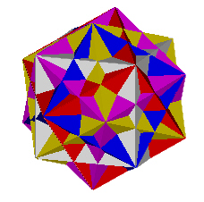
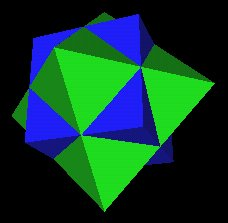

Fig. 4.3 5 Cubes in Dodecahedron |
In June of 1998 Lynnclaire Dennis and members of the Sequoia Symposium showed me a 120 triangular faced polyhedron that was important to her because she experienced this "watery" polyhedron during a near death experience. I was able to identify this polyhedron from my study of R. Buckminster Fuller's work. Fuller1 described how the sphere can be broken into 120 LCD spherical triangles, which leads to a 120 triangular faced convex polyhedron that seemed to match the polyhedron she experienced. However, it was not until I understood that the polyhedron that she was describing was mixed, that is concave/convex (the polyhedron had bumps), that I began to explore other possibilities.
This article presents the current information I have developed for Lynnclaire's 120 "bubble" Polyhedron. It is my hope that this dynamic structure, with all its amazing relations and dynamics, turns out to be as important as Lynnclaire thinks it is. Whether it does or not, this is truely an amazing polyhedron worthy of further study.
See the Pattern web site at http://www.pattern.org for more information about Lynnclaire Dennis and the "Sequoia Team" investigating the information, implications and meaning of her near death experiences.
To start off, here are some illustrations of the 120 Polyhedron.
|
Figs. 2.1, 2.2 The 144 Polyhedron |
|
This polyhedron has 120 triangular faces, 180 edges, and 62 vertices. To check that these numbers are consistent, we use Euler's formula for the topological features of polyhedra:
| Vertices + Faces = | Edges + 2 |
| V + F = | E + 2 |
| 62 + 120 = | 180 + 2 |
| 182 = | 182 |
It turns out that other polyhedra can be constructed using the 62 vertices of this polyhedron. For example, the next illustration shows the regular Dodecahedron positioned within the 120 Polyhedron.
|
Fig 3.1 The regular Dodecahedron within the 120 Polyhedron |
Notice that the regular Dodecahedron, which has 20 vertices, is positioned in such a way as to share 20 of the 120 Polyhedron's vertices.
In fact, all of the Platonic polyhdera can similarly be positioned within the 120 Polyhedron, sharing the 120 Polyhedron's vertices. This is cataloged in the next 4 illustrations.
|
Fig 3.2 Tetrahedron |
Fig 3.3 Cube |
|
Fig. 3.4 Octahedron |
Fig. 3.5 Icosahedron |
In Fuller's "Cosmic Hierarchy"1, the regular Dodecahedron and Icosahedron do not share their vertices with any of the other polyhedra within the hierarchy. Their inability to "fit in" with the other polyhedra shows one of the limitations of Fuller's Cosmic Hierarchy. The problem arises, as will be shown below, because the model is too dependent on the concept of a single static vector matrix, which Fuller calls the Isotropic Vector Matrix (IVM), from which all polyhedra are to be measured. However, the polyhedra in the 120 Polyhedra arise from a single dynamic motion, which Fuller was well aware of and for which he named the "Jitterbug" motion. (This will be shown below.)
As shown above, the 120 Polyhedron provides a way to include the regular Dodecahedron and the Icosahedron into a single polyhedral system. All the Platonic "solids" share their vertices with the 120 Polyhedron.
This is not the end to the inventory of polyhedra to be found in the 120 Polyhedron. There also occurs the rhombic Dodecahedron and the rhombic Triacontahedron.
|
Fig. 3.6 Rhombic Dodecahedron |
Fig. 3.7 Rhombic Triacontahedron |
If we consider not only the 62 vertices of the 120 Polyhedron but also the intersection points resulting from the above inventory of polyhedra's edges intersecting with one another, there are even more well known polyhedra to be seen.
In particular, from the intersection of the Octahedron and the Cube, the Cubeoctahedron is defined. Fuller called the Cubeoctahedron the Vector Equilibrium (VE).
|
Fig. 3.8 Cubeoctahedron (VE) |
The cube and the regular Dodecahedron share the same vertices of the 120 Polyhedron, as shown in the next sequence of illustrations.
|
Fig. 4.1 Dodecahedron and Cube in the 120 Polyhedron |
Fig. 4.2 Cube in regular Dodecahedron |
In fact, we find that 5 different Cubes can be arranged inside the Dodecahedron. Each of the Dodecahedron's vertices is shared with 2 Cube vertices.
|
Fig. 4.3 5 Cubes in Dodecahedron |
This led me to consider the possibility of 4 cubes rotating in such a way as to "spring forth" from a single 5th Cube and freezing into the regular Dodecahedron position.
Consider a single cube. It has 8 vertices.
We can use opposite vertices as axes of rotations for the cube. There are then 4 vertex-to-opposite-vertex rotation axes.

Fig 4.4 4 Rotational Axes |
If we place 5 cubes, of the same size, in the same position, and leave one of the 5 cubes fixed, we can use these 4 rotation axes to rotate the other 4 cubes. We assign each of the 4 cubes to a different rotation axis.
When we rotate each of the 4 cubes by an angular amount of 44.47751219°(approximately), clockwise around the 1st axis, counter clockwise around the 2nd, clockwise around the 3rd, counter clockwise around the 4th, we find that the vertices of all the cubes define a regular Dodecahedron. Details for the calculation of this angle are given at http://www.rwgrayprojects.com/Lynn/NCH/nch/angle.html
|  |
|
|
Figs. 4.5, 4.6 Regular Dodecahedron defined by rotating 4 of the 5 cubes |
|
Notice that the cube edges define pentagrams in the Dodecahedron's pentagonal faces.
|
Fig. 4.7 Cubes' edges define 12 Pentagrams |
Here is a gif movie showing the 4 rotating cubes, with one cube (gray in color) stationary.
|
Fig. 4.8 Animation of 4 rotating Cubes, fifth Cube stationary |
An interesting feature of this dynamic definition of the regular Dodecahedron, using the rotation of the Cubes, is that 2 orientations of the Dodecahedron appear. Here are 2 frames from the above gif movie in which I have added some black lines to outline some of the Dodecahedron's edges to show the 2 orientations of the regular Dodecahedron.
| Figs. 4.9, 4.10 Two orientations of the Dodecahedron | |
For each Cube an Octahedron is can be defined. The Octahedron is the "dual" polyhedron of the Cube. A "dual" of a polyhedron is (loosely) defined by replacing all vertices with faces and all faces by vertices. So, a cube having 8 vertices and 6 faces will have a dual polyhedron consisting of 8 faces and 6 vertices. This is the Octahedron.
|

Fig. 4.11 Cube and Octahedron |
So, there are 5 Octahedra for the 5 Cubes we have been considering.
If we now rotate the 4 Octahedra with the 4 Cubes (keeping one Cube and its Octahedron fix) by the angular amount of 44.47751219°(approximately) mentioned above, both the Octahedra and Cube vertices will coincide with vertices of the 120 Polyhedron.
| Figs. 4.12, 4.13 30 vertices of 5 rotated Octahedra | |
The 5 Cube's vertices coincide with the regular Dodecahedron's 20 vertices, which coincide with 20 vertices of the 120 Polyhedron. The 5 Octahedra have a total of 5x6=30 vertices and these coincide with 30 vertices of the 120 Polyhedron. This leaves 62-20-30=12 vertices of the 120 Polyhedron unassigned. These 12 vertices correspond to the 12 vertices of an Icosahedron, which is the dual of the regular Dodecahedron.
Before continuing with this rotational development of the 120 Polyhedron, let us take a look at another polyhedron associated with the Cube and the regular Dodecahedron.